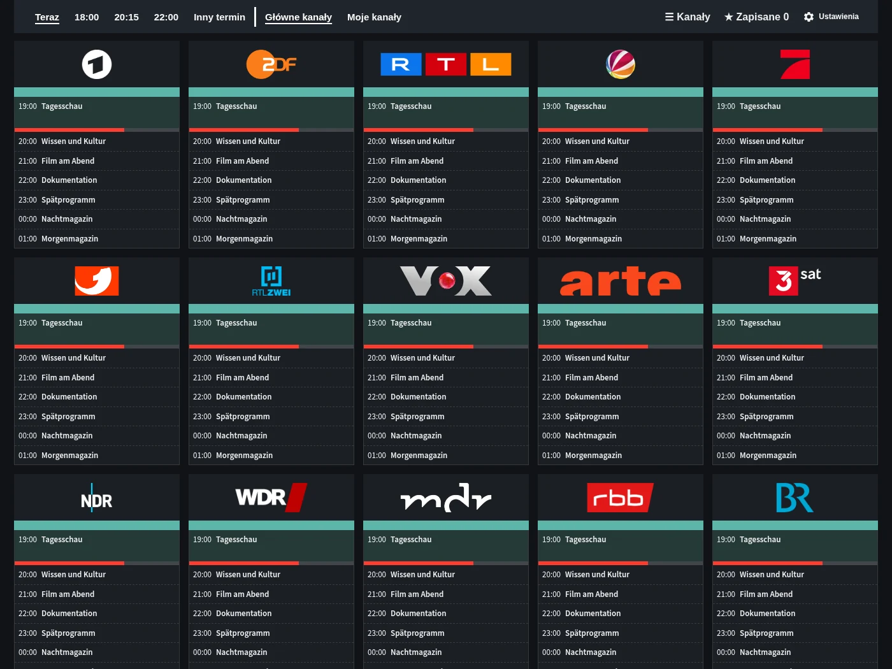
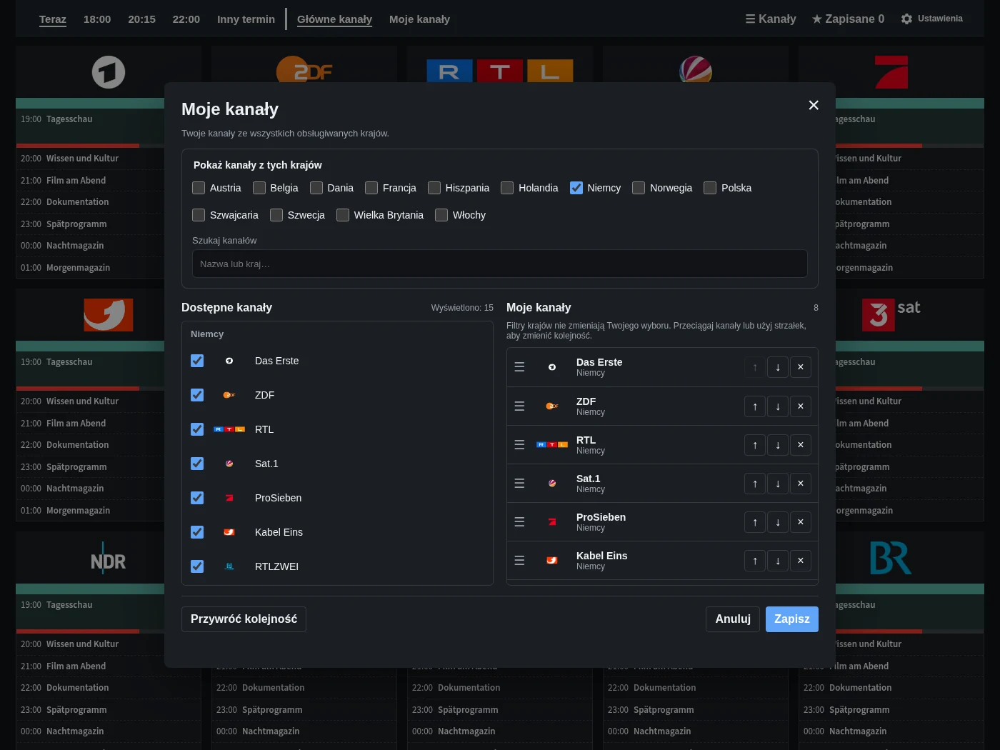
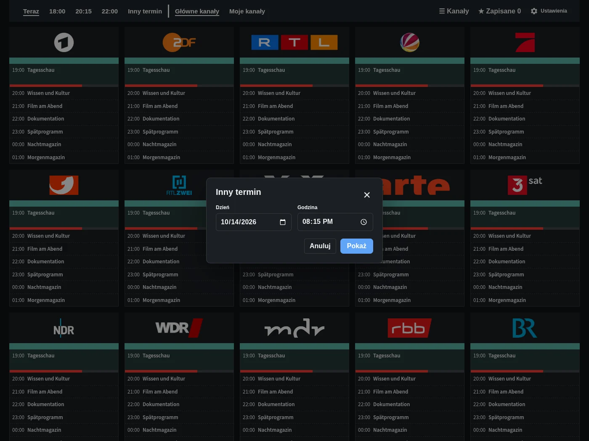
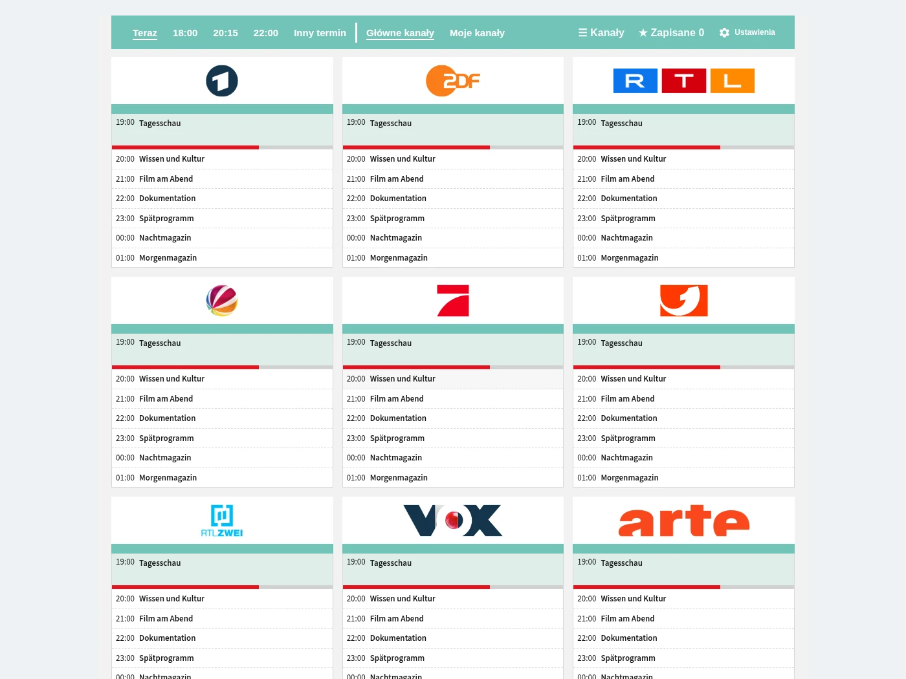

Program TV
Kanały, godziny i programy w jednym miejscu. Przejdź do teraz, 18:00, 20:15 lub 22:00.
Zobacz program TV, własne listy kanałów, wybór godziny i opcjonalną kartę pulpitu.

Kanały, godziny i programy w jednym miejscu. Przejdź do teraz, 18:00, 20:15 lub 22:00.

Wybierz ulubione kanały z dostępnych krajów i ustaw własną kolejność.

Wybierz inną datę i godzinę bez opuszczania programu TV.

Dodaj TV Guide do własnego pulpitu. Pełny program jest także dostępny na pasku bocznym. Obraz przedstawia kartę w trybie jasnym i ciemnym.
Przykładowe programy. Tytuły pozostają w języku oryginalnym.
Bezpłatnie i bezpośrednio w Home Assistant.
Otwórz w HACS